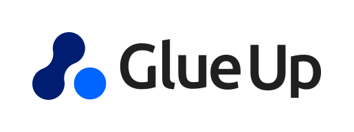

🤖 Retrieval-grounded AI systems
Building AI experiences that answer from policy, claims context, and operational evidence instead of free-form guesses.
RAG · Gemini · Vertex AI · Google ADKBackend, Data & Applied AI.
Software engineer with 10+ years building production Java services and distributed systems. Specializing in AI-assisted workflows, backend architecture, and operational automation.

Building AI experiences that answer from policy, claims context, and operational evidence instead of free-form guesses.
RAG · Gemini · Vertex AI · Google ADKDesigning resilient services and event-driven architectures for complex, long-running processes.
Java · Spring Boot · Kafka · RabbitMQBuilding reliable datasets, pipelines, and internal tools that make teams faster and production operations clearer.
Python · Databricks · Spark · Airflow · GraphQL · KubernetesClaim reviewers search policy documents by hand, while ungrounded models cannot be trusted with benefits answers.
A retrieval-first pipeline that grounds Gemini answers in cited policy and claim evidence, with human review on every output.
High-volume routine cases consume reviewer bandwidth, while ambiguous cases still require judgment.
Gemini and ADK evaluate business rules to resolve standard cases automatically and escalate exceptions for review.
Accumulator data spanned multiple systems, complicating consistent analytics and reporting.
A Databricks + Spark SQL source of truth feeding Looker datasets and Airflow-driven daily client reports.
Long-running business processes span services that must coordinate reliably.
Spring Boot microservices communicating over Kafka and RabbitMQ, designed for asynchronous failure and replay.
Operational scripts lived in scattered locations with no safe, consistent way to run them.
A unified Flask console with reusable execution patterns, rollback support, and full audit trails.
Network provisioning depends on viable routes through complex device topologies.
A Neo4j device graph with a REST API for Yen's K-shortest-path queries.
Languages $ stack --languages 5
Backend & Platform $ stack --backend-platform 10
Applied AI $ stack --applied-ai 12
Frontend $ stack --frontend 5
Data $ stack --data 13
Cloud & DevOps $ stack --cloud-devops 12
Collective Health·Dallas, TX·Healthcare Benefits and Claims Administration·Applied AI, Backend & Data

Glueup.com (Event Bank)·McLean, VA·Events, CRM, Webinars, and Networking·Backend
Verizon·Cary, NC·Telecommunications and Network Provisioning·Backend & Network Provisioning

General Electric·Overland Park, KS·Energy and Pipeline Operations·Full-Stack